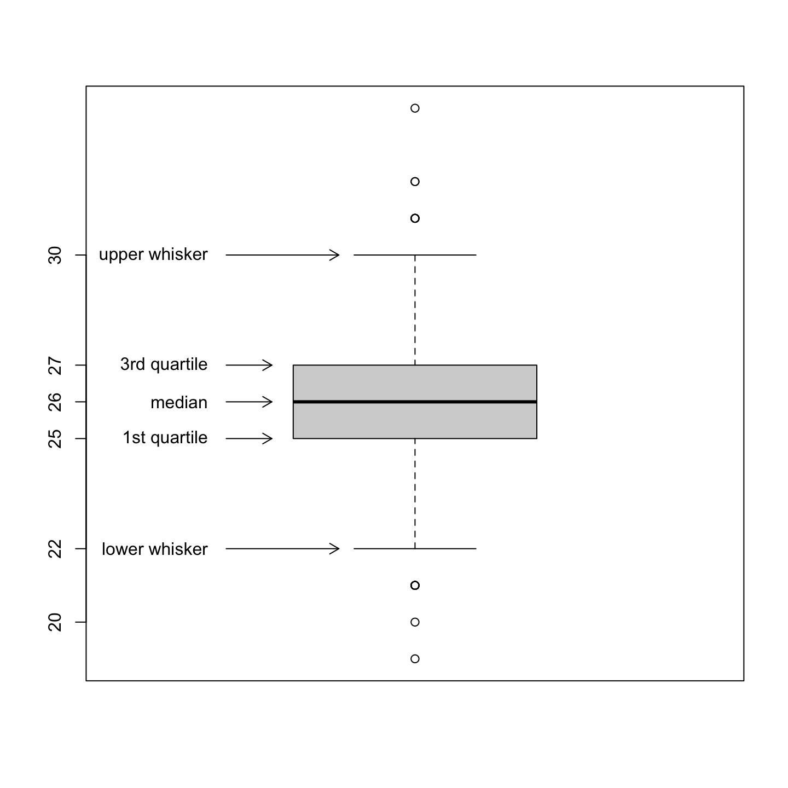

# Set up ----------------------------------------------------------------------
# Set seed
set.seed(20220906)
# Generate some age variable for a university master programme
age <- round(rnorm(1e3, mean = 26, sd = 2), 0)Reading a boxplot
Boxplots are descriptive tools to visualize the distribution of variables with a focus on their measures of spread and center. A boxplots report in the same figure the median, the 1st and 3rd quartiles, and indicate possible outliers.
Imagine wanting to plot the distribution of age in a court of students enrolled in a master program at a university. The age of the students is likely to be normally distributed around a mean of 26.
Then, we can create the boxplot of this age variable in R by using the boxplot() function.
# Look at the boxplot ---------------------------------------------------------
boxplot(age)
The variable age is centered around 26 and 50% of the distribution is located between 25 (1st quartile) and 27 (3rd quartile). There are 6 values that represent possible outliers (the circles outside the whiskers).
Play around with boxplots
You can compute the statistics used to draw the boxplot explicitly by following this code:
# Compute boxplot statistics manually ------------------------------------------
# Compute the median
med <- median(age)
# Compute 1st and 3rd quartiles
qnt <- quantile(age, probs = c(.25, .75))
# Compute interquartile range
IQR <- diff(qnt)[[1]]
# Compute fences/whisker bounds
C <- 1.5 # range multiplier
fences <- c(lwr = qnt[[1]] - C * IQR, upr = qnt[[2]] + C * IQR)
# Put together the boxplot stats
bxstats <- sort(c(med = med, qnt, f = fences))
# Compute boxplot statistics with R function
bxstats_auto <- boxplot.stats(age, coef = C)$stats
# Compare results obtain manually and with the R function
data.frame(manual = bxstats, R.function = bxstats_auto) manual R.function
f.lwr 22 22
25% 25 25
med 26 26
75% 27 27
f.upr 30 30You can visualize the impact of different choices for the range multiplier C. In the following pictures, you can see that a larger C is less restrictive in which values are considered outliers.

TL;DR, just give me the code!
# Set up ----------------------------------------------------------------------
# Set seed
set.seed(20220906)
# Generate some age variable for a university master programme
age <- round(rnorm(1e3, mean = 26, sd = 2), 0)
# Look at the boxplot ---------------------------------------------------------
boxplot(age)
# Boxplot with explanation
C <- 1.5 # range multiplier
boxplot(age, range = C)
# Add arrows pointings to statistics
arrows(x0 = .69, y0 = boxplot.stats(age, coef = C)$stats,
x1 = c(.875, rep(.765, 3), .875), y1 = boxplot.stats(age, coef = C)$stats,
length = 0.1)
# Add labels of statistics
text(x = rep(.66, 5),
y = boxplot.stats(age, coef = C)$stats,
labels = c("lower whisker",
"1st quartile",
"median",
"3rd quartile",
"upper whisker"),
adj = 1)
# Add y axis labels
axis(side = 2, at = boxplot.stats(age, coef = C)$stats[c(1, 3, 4)], labels = TRUE)
# Compute boxplot statistics manually ------------------------------------------
# Compute the median
med <- median(age)
# Compute 1st and 3rd quartiles
qnt <- quantile(age, probs = c(.25, .75))
# Compute interquartile range
IQR <- diff(qnt)[[1]]
# Compute fences/whisker bounds
C <- 1.5 # range multiplier
fences <- c(lwr = qnt[[1]] - C * IQR, upr = qnt[[2]] + C * IQR)
# Put together the boxplot stats
bxstats <- sort(c(med = med, qnt, f = fences))
# Compute boxplot statistics with R function
bxstats_auto <- boxplot.stats(age, coef = C)$stats
# Compare results obtain manually and with the R function
data.frame(manual = bxstats, R.function = bxstats_auto)
# Visualize the effect of different C -----------------------------------------
# Allow two plots one next to the other
par(mfrow = c(1, 2))
# Plot C = 1.5 and 3
lapply(c(1.5, 3.0), FUN = function (x){
C <- x
boxplot(age, range = C, main = paste0("C = ", C))
# Add arrows pointings to statistics
arrows(x0 = .69, y0 = boxplot.stats(age, coef = C)$stats,
x1 = c(.875, rep(.765, 3), .875), y1 = boxplot.stats(age, coef = C)$stats,
length = 0.1)
# Add labels of statistics
text(x = rep(.66, 5),
y = boxplot.stats(age, coef = C)$stats,
labels = c(paste(ifelse(C == 1.5, "inner", "outer"), "fence \n lower bound"),
"1st quartile",
"median",
"3rd quartile",
paste(ifelse(C == 1.5, "inner", "outer"), "fence \n upper bound")),
adj = 1)
})